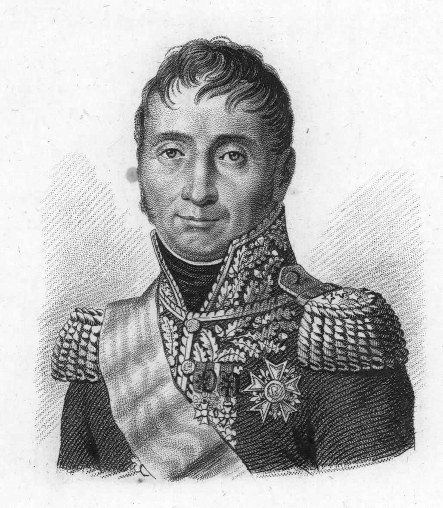
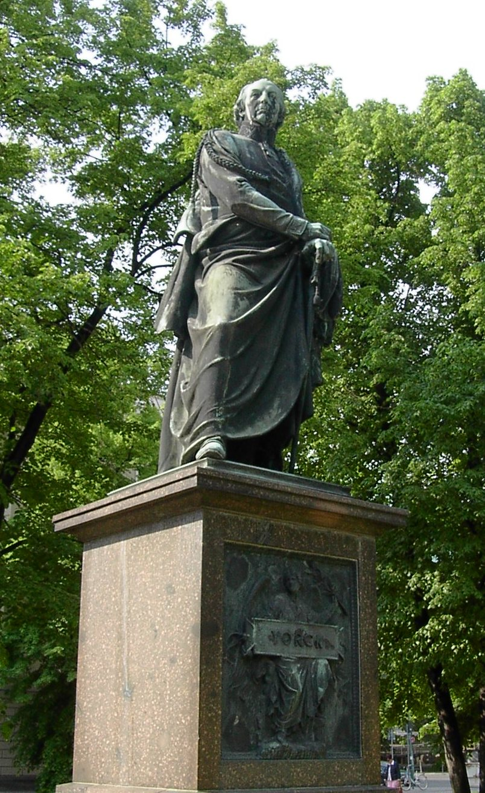
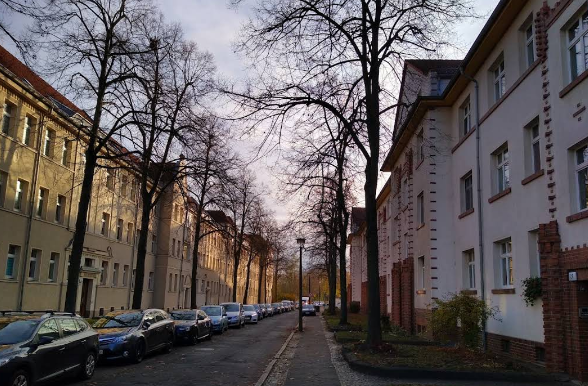
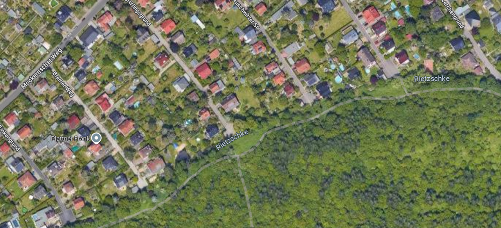
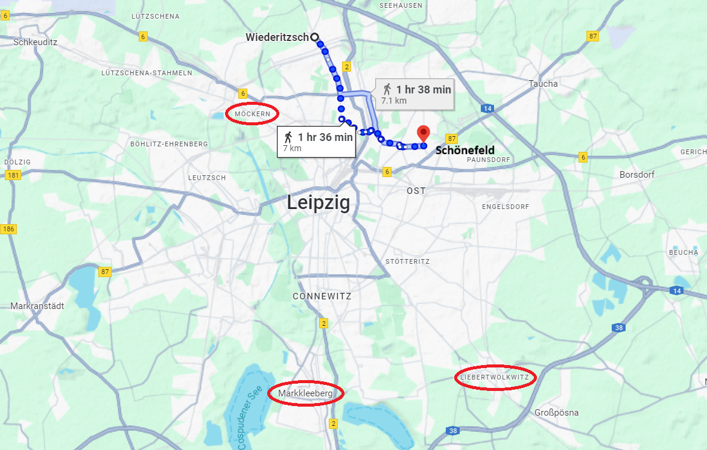
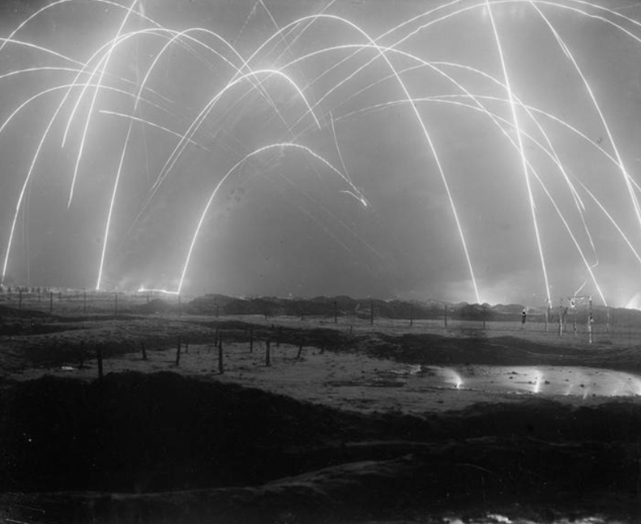

라이프치히 전투 (18) - 정말 나타난 증원군
게시: 2025-09-22T06:30:57+09:00
프로이센 포병대의 럭키샷이 일으킨 그랑다르메 탄약차량들의 폭발 덕분에 프로이센군은 여태까지 그들의 돌격을 분쇄하던 프랑스군 포병 진지에 돌입할 수 있었고, 2문의 대포를 나포하는데 성공했습니다. 그러나 바로 그 폭발로 인한 연기를 연막으로 삼은 것은 그랑다르메도 마찬가지였습니다. 콩팡(Jean Dominique Compans) 사단의 연대 하나가 연기에 가려진 채로 프로이센군의 측면에서 달려들었고, 진격해 왔던 프로이센군은 완전히 허를 찔려 어지럽게 퇴각해야 했습니다.

(콩팡(Jean Dominique Compans) 장군입니다. 나폴레옹과 동갑이었던 그는 란, 그리고 나중에는 술트 밑에서 지휘관을 했고 마렝고와 아우스테를리츠 등에서 공훈을 세웠습니다. 라이프치히 전투에서는 본문에 나오는 격전을 치르며 총탄과 기병도에 여러 차례 부상을 입었지만, 곧 회복하여 1814년에도 전투에 참여했습니다. 1815년 나폴레옹의 백일천하 때는 나폴레옹 편에 붙었으나 현역 군 지휘관으로는 뛰지 않아 부르봉 왕가로부터 용서를 받았고, 대신 네 원수의 재판에서 사형 언도에 찬성표를 던지는 배신 행위를 했습니다.) 콩팡의 병사들은 이렇게 지리멸렬하여 퇴각하는 프로이센군의 뒤를 역으로 추격하여 프로이센 포병 진지까지 쇄도했습니다. 이 기세에 밀려 프로이센 포병대 대부분도 재빨리 도망쳤는데, 이때 프로이센군이 완전히 무너지지 않은 것은 메클렌부르크(Mecklenburg) 기병대가 역시 또 측면에서 그랑다르메를 덥쳤고, 또 2문의 대포가 끝까지 도망치지 않고 남아서 캐니스터탄을 쏘아붙인 덕분이었습니다. 결국 그랑다르메도 퇴각하여 원래 위치로 되돌아갔고, 양측은 치열한 전투를 이어 갔습니다. 아무리 마르몽의 제6군단이 정예병력이라고 하더라도, 프로이센 1개군단과 러시아군 1개군단을 동시에 상대해서는 승산이 없었습니다. 그런데도 마르몽이 이렇게 전혀 밀리지 않고 대등한 싸움을 벌인 것에는 이유가 있었습니다. 마르몽은 자신이 급히 구성한 짧은 방어선 중 라이프치히에 더 가까운 남쪽 끝인 뫼케른 마을이 승부처가 될 것으로 보고 거기에 병력을 집중했으며, 실제로 거기에 투입된 프로이센군 제1군단장 요크(Yorck)도 어떻게든 뫼케른 마을의 남쪽 끝을 돌파하려고 좁은 전선에 병력을 집중 투입했습니다. 그런데 거기에 마르몽이 12파운드 중포를 집중 배치했기 때문에, 프로이센군은 그 화력 앞에서 속절없이 대포밥이 되었던 것입니다.

(요크 장군은 나폴레옹보다 10살 위였고, 정규 사관학교가 없던 시절 신사 계급의 관례대로 13살에 프로이센군에 입대하여 5년 만에 소위로 임관했으나, 불과 2년 만에 상관 항명죄로 계급장을 뜯기고 1년간 투옥되었습니다. 이유는 당시 바이에른 왕위 계승 전쟁에 참전했던 그의 부대 지휘관이 저지른 약탈 행위를 20살 짜리 젊은 요크 소위가 비난했기 때문이었습니다. 풀려난 뒤에도 복직이 거부되자, 그는 네덜란드 동인도 회사에 고용된 스위스 용병부대에 대위로 들어가 인도네시아에서 복무하는 등 여기저기서 용병 생활을 했습니다. 심지어 아프리카 남쪽 끝 케이프타운에서 프랑스군 소속으로 영국군과 싸우기도 했습니다. 그는 프리드리히 대왕이 사망한 뒤에야 프로이센으로 돌아올 수 있었고 결국 33세에야 소령 계급으로 프로이센군에 복직할 수 있었습니다. 그렇게 반항적인 그의 성격은 늙어서도 그대로라서, 귀족적인 블뤼허와는 사이가 매우 좋지 않았습니다. 그의 성은 원래 요크가 아니라 야르카(Jarka)였는데, 목사였던 그의 아버지가 (당시 폼나는 선진국이었던) 영국식 이름 York처럼 들리도록 Yorck로 개명한 것입니다. 사진은 베를린에 있는 그의 동상입니다.) 여기서 블뤼허가 최전선에 투입한 랑쥬롱의 러시아 군단은 뭘하고 있었길래 마르몽이 뫼케른에 병력을 집중할 수 있었는가 하고 의아해 하실 수 있습니다. 실은 랑쥬롱도 요크와 동일하게, 비더릿쉬 마을의 북쪽 끝을 돌파하기 위해 그 쪽으로 병력을 집중했습니다. 그러다보니 요크의 프로이센군과 랑쥬롱의 러시아군 사이가 크게 벌어졌고, 약간 높은 고지에서 그 전개를 보고 있던 마르몽은 랑쥬롱의 협공을 걱정하지 않고 그냥 뫼케른에 병력을 집중했던 것입니다.

(라이프치히가 점점 확장되면서 뫼케른은 원래의 형태를 완전히 잃고 지금은 라이프치히 교외의 한적한 주택가가 되어 있습니다.) 그렇다면 뫼케른의 반대쪽 끝인 비더릿쉬에는 상대적으로 마르몽의 병력 배치가 작았다는 뜻입니다. 프로이센 1개 군단에게 마르몽이 70%의 전력으로도 이렇게 악전고투하고 있다면, 30%도 안 되는 병력만 배치한 비더릿쉬에서는 러시아 1개 군단이 압도적인 우위를 차지할 것이 뻔했습니다. 실제로도 그랬습니다. 돔브로브스키의 폴란드 사단은 철천지 원수인 러시아군이 몰려오자 이를 악물고 싸웠지만, 랑쥬롱의 러시아 군단은 수적 우위를 앞세워 어렵지 않게 그로스비더릿쉬(Grosswiederitzsch, 큰 비더릿쉬)와 클라인비더릿쉬(Kleinwiederitzsch, 작은 비더릿쉬) 2개 마을로 구성된 비더릿쉬를 점령했습니다. 폴란드 사단은 이들에게서 쫓겨나 남쪽의 오이트리츠쉬(Eutritzsch)로 퇴각했습니다. 그러나 나폴레옹의 주력 부대들은 모두 라이프치히 남쪽의 결전장으로 몰려갔을 것으로 생각하고 있던 랑쥬롱에게는 놀랍게도, 곧 오이트리츠쉬로부터 강력한 증원 부대가 몰려오기 시작했습니다. 블뤼허의 가장 큰 걱정은 남쪽 라이프치히가 아니라 북동쪽 바트 뒤벤으로부터 그랑다르메의 증원군이 오는 것이라는 것을 잘 알고 있던 랑쥬롱은 이 뜻밖의 증원부대에 대해 깜짝 놀랐습니다. 이 새로운 증원 부대는 곧 강력한 공격을 가하여 랑쥬롱의 러시아군을 비더릿쉬에서 몰아내었고, 당황한 러시아군은 리트쉬커 개천을 건너 도망치려다 개천에 불과하다고 생각했던 리트쉬커가 의외로 건너기 어려워 강가에 몰려 몰살당할 위기에 몰리기도 했습니다.

(이 항공사진을 가로질러 리트쉬커 개천이 흐릅니다만, 여기서 보면 개천이 있는지 도랑이 있는지 의심스러운 수준으로 작은 개천으로 보입니다. 리트쉬커 개천 위쪽의 단정한 주택가가 그로스비더릿쉬(Grosswiederitzsch) 마을입니다.) 랑쥬롱이 이 위기를 간신히 수습한 뒤에 한숨 돌리고 상황을 보니, 놀랍게도 오이트리츠쉬에서 몰려온 새로운 증원부대는 전혀 새로운 부대가 아니었고, 방금 전에 쫓겨났던 돔브로브스키의 폴란드군이었습니다. 일단 후퇴했던 폴란드군이 진열을 재정비한 뒤, 여단 규모 밖에 안 되던 이 폴란드군 병사들은 압도적인 수적 열세에도 불구하고 아무 지원도 받지 않은 채 과감한 반격에 나섰던 것입니다. 놀라고 어이없기는 했으나 이때 당시의 싸움터에서는 머릿수가 사실상 거의 전부였습니다. 랑쥬롱은 추가 지원군이 없다는 사실에 안심하고 다시 폴란드군을 밀어붙였고, 결국 폴란드군은 다시 비더릿쉬를 내주고 밀려나야 했습니다. 그런데 랑쥬롱이 퇴각하는 폴란드군의 뒤를 쫓으려다보니, 북동쪽 바트 뒤벤 방향에서 흙먼지가 일어나는 것이 눈에 들어왔습니다. 오전 내내 블뤼허를 우려하게 했던 소문대로, 북동쪽 바트 뒤벤 방향에서 대규모의 그랑다르메 병력이 행군해 오는 것이 틀림없었습니다.
(이 사진은 클라인비더릿쉬(Kleinwiederitzsch) 마을 외곽의 풍경입니다. 이렇게 온 동네가 거의 완벽한 평원이다보니, 저 멀리서 접근해오는 군부대의 규모는 그 행군으로 인해 일어나는 흙먼지로 판단하는 수 밖에 없었을 것입니다. 아무래도 짐마차를 끌고 오면 훨씬 더 큰 규모로 보였겠지요.) 랑쥬롱은 서둘러 병력을 수습하여 이 새로운 적을 맞이할 준비에 들어갔는데, 나중에 알고 보니 그 부대는 이 날 하루 종일 모두의 관심사였던 수암의 제3군단 산하 제9사단이었습니다. 델마(Delmas)가 지휘하던 이 사단이 실제 규모보다 훨씬 더 커보였던 것은 이 사단은 예비 포병대와 함께 각종 장비와 보급품을 실은 마차 행렬을 호위하고 있었기 때문이었습니다. 랑쥬롱 못지 않게 델마도 눈 앞에 펼쳐진 전투 상황에 대해 당황한 것은 마찬가지였습니다. 그는 단순 호송 임무를 수행한다고 생각하고 있었을 뿐 아무런 전황 소식을 듣지 못하고 있었기 때문이었습니다. 당장 나폴레옹의 명령대로 수송 차량들을 쇤너펠트(Schönefeld)로 가는 것이 우선인지 폴란드군을 도와 러시아군과 싸우는 것이 먼저인지 판단을 제대로 못할 정도였습니다. 당황한 델마는 부대를 반으로 나누어 절반은 폴란드군의 퇴각을 도왔고 나머지 절반은 수송대 호송을 계속 했는데, 결과적으로 그 수송대 대부분은 파르터강을 건너지 못하고 상실되었습니다.

(수송대 호송이라는 나름 편한 임무를 맡았던 델마 장군도 나름 당황했을 것입니다. 목적지인 쇤너펠트를 불과 7km 앞두고 이런 격전에 휘말릴 줄은 몰랐을 테니까요. 이미 멀리서부터 포성이 들렸겠지만, 그건 라이프치히 남쪽의 제1선에서 나는 소리이고, 자신은 훨씬 후방인 쇤너펠트까지만 간다고 생각했었겠지요?)

(참고로, 대포 소리는 뫼케른-비더릿쉬 일대처럼 산이나 언덕, 건물이 많지 않은 평지에서 훨씬 더 잘 퍼져나갑니다. 1813년 라이프치히 전투 때는 위력이 약한 흑색 화약을 장약으로 썼으니 아무래도 소리는 더 작았겠지만, WW1 당시에는 프랑스-독일 국경 지대에서 벌어진 포격전 소리가 수십 km는 물론이고 수백 km 떨어진 오늘날 폴란드에서 들렸다는 기록이 있습니다. 또 네덜란드 일대에서의 포격 소리는 바다를 건너 영국 남동부 서섹스 지방에서도 들렸다는 기록도 있습니다.) 북쪽 비더릿쉬에서 이런 소동이 벌어지는 와중에도, 남쪽 뫼케른에서 마르몽의 병사들은 끈질기게 잘 싸웠습니다. 기존 돌격에 참여했던 프로이센군 여단들이 극심한 피해를 입고 후퇴한 뒤, 요크는 이제 거의 마지막으로 남은 보병 부대인 슈타인메츠(Steinmetz)의 여단을 투입했습니다. 이때 마르몽이 고지에서 가만히 보니 스타인메츠 여단의 뒤를 따르는 후속 프로이센 부대가 없었습니다. 프로이센군도 더 이상 여력이 없는 것이 분명했습니다. 이때 즈음 해서는 마르몽도 더 이상 버티기 어려운 상태였으므로, 마르몽은 여기서 승부수를 내기로 합니다. 이 슈타인메츠 여단을 때려부순 뒤 그 뒤를 추격하여 요크 군단을 무너뜨리면, 거기서부터 북쪽으로 진격하여 랑쥬롱의 러시아 군단의 측면을 찌를 수 있다고 판단한 것입니다. 이건 바그람 전투에서 나폴레옹이 오스트리아군에 대해 썼던 바로 그 김밥말이 전법이었습니다. 마르몽은 만반의 준비를 갖추고, 슈타인메츠가 100미터 앞으로 접근할 때까지 기다렸습니다. Source : The Life of Napoleon Bonaparte, by William Milligan Sloane Napoleon and the Struggle for Germany, by Leggiere, Michael V With Napoleon's Guns by Colonel Jean-Nicolas-Auguste Noël https://www.britannica.com/event/Napoleonic-Wars/Dispositions-for-the-autumn-campaign https://www.historyofwar.org/articles/battles_leipzig_16_october.html https://warhistory.org/@msw/article/leipzig-battle-of-the-nations https://www.napolun.com/mirror/napoleonistyka.atspace.com/Leipzig_battle.htm https://en.wikipedia.org/wiki/Jean_Dominique_Compans https://en.wikipedia.org/wiki/Ludwig_Yorck_von_Wartenburg http://www.eastsussexww1.org.uk/sound-guns/index.html